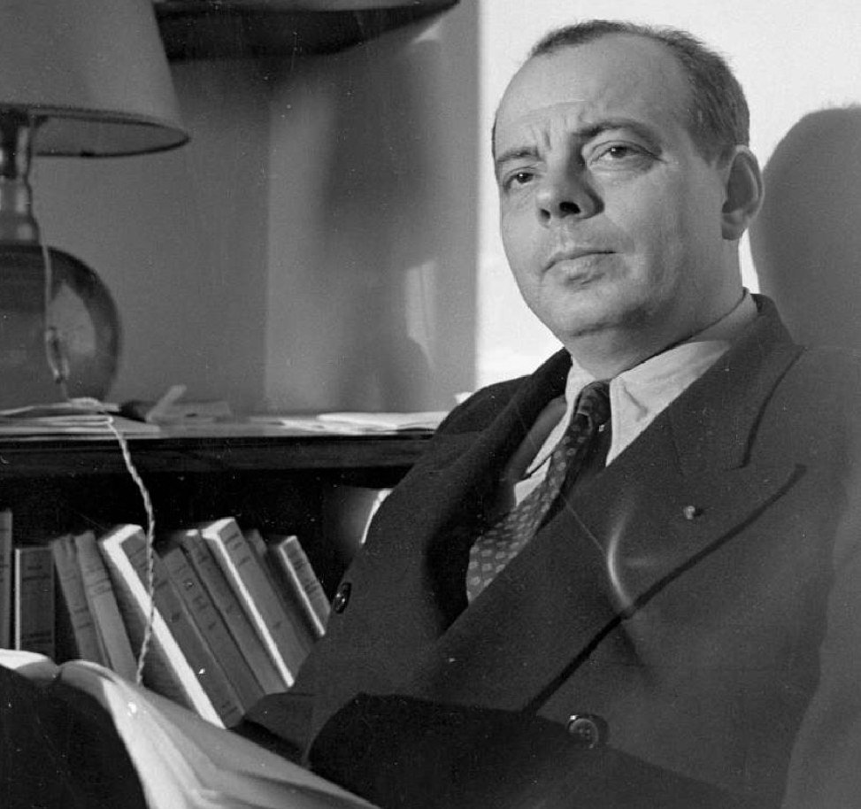

Антуан де Сент-Экзюпери
писатель, мыслитель, поэт, летчик. Антуан Мари Роже де Сент-
Экзюпери
родился 29 июня 1900 года в Лионе и был третьим ребенком графа Жана де Сент-Экзюпери и Марии де Фонсколомб.
Мать Антуана из старинной провансальской семьи.
Еще древнее род Сент-Экзюпери — это имя носил один из рыцарей святого Грааля.
Антуан де Сент-Экзюпери — биография
Антуан де Сент-Экзюпери – французский литератор, эссеист, профессиональный летчик. Мировую известность получил после выхода его книги «Маленький принц».
В жизни Антуана де Сент-Экзюпери было две страсти – литература и авиация, и благодаря именно литературе он и прославился на весь мир. Он написал несколько произведений, но мировую популярность завоевал благодаря одному – «Маленькому принцу». В его жизни случались невероятные события и совпадения, у него была душа романтика и философа, он умел доступно рассказать об удивительных вещах и явлениях, о необходимости беречь мир, в котором мы все живем.
ДЕТСТВО
Будущий прославленный писатель родился 29 июня 1900 года во Франции. Родной город Экзюпери – Лион. Отец мальчика был дворянином, поэтому его полное имя звучит как Антуан Мари Жан-Батист Роже де Сент-Экзюпери, хотя все родные и близкие звали его просто Тони. Он стал третьим ребенком в семье, где всего воспитывалось пятеро детей. Антуану исполнилось всего четыре годика, когда от внутримозгового кровоизлияния скончался его отец. Средств для существования не стало, и мама с детьми была вынуждена поселиться у тетушки Мари Трико, которая владела замком и квартирой на площади Белькур. Жили не очень богато, зато дружно. Самым близким человеком для Тони стал его младший брат Франсуа.
Мама много занималась детьми, она научила их любить литературу и искусство. Антуан очень любил маму, став взрослым, не отдалился от нее, наоборот, постоянно писал ей письма, наполненные сыновьей нежностью и любовью, которые читаются, как литературное произведение. Кроме литературы мальчик с детства полюбил технику, поэтому всерьез задумался о выборе жизненного пути, когда пришло время что-то решать.
Мама отдала мальчика в лионскую христианскую школу, потом он учился в иезуитской школе города Монтрё. Мама также позаботилась о том, чтобы четырнадцатилетний сын продолжил обучение в швейцарском католическом пансионе. В 1917-м Тони стал студентом архитектурного факультета Школы изящных искусств в Париже. Он получил диплом бакалавра, и собирался поступить в военно-морской лицей. Однако парню не удалось пройти конкурсный отбор. 10 июля 1917 года от ревмокардита умер его любимый брат Франсуа, и от этого удара Антуан долго не мог оправиться. Он стал замкнутым и нелюдимым.
КНИГИ
Творческая биография писателя началась еще в 1914-м, когда он учился в колледже. Это была сказка под названием «Одиссея цилиндра». Он представил ее на литературный конкурс и занял в нем призовое место. В 1925-м молодого автора представили популярным писателям тех лет, которые лестно отозвались о его способностях. Последовало предложение о сотрудничестве. На следующий год в печати появился рассказ Сент-Экзюпери «Летчик», который опубликовало издание «Серебряный корабль».
Небо и авиация занимают в произведениях литератора ключевое место. Он любил небо и старался показать мир с точки зрения пилота. Антуан пытался донести до читателя свою философию, свое особое видение этого мира. Многие высказывания литератора стали впоследствии цитатами.
Устроившись на работу в «Аэропошталь», Сент-Экзюпери продолжал заниматься литературным творчеством. После возвращения на родину он пришел в издание Гастона Галлимара, с которым заключил договор на написание и издание семи романов. Экзюпери-писатель не смог бы состояться без Экзюпери-летчика.
В 1931-м его произведение «Ночной полет» было отмечено премией «Фемина», спустя год на его основе сняли художественный фильм. Катастрофа над Ливийской пустыней и последующие события литератор отразил в романе под названием «Земля людей» («Планета людей»). Там писатель рассказал о своих впечатлениях от сталинского режима, с которым он столкнулся в СССР.
Роман «Военный летчик» — автобиографическое произведение. Автор писал ее под впечатлением событий Второй мировой войны, в которых принимал непосредственное участие. Во Франции книгу запретили, зато в Америке она пользовалась невероятным успехом. По заказу одного из американских издательств, Экзюпери сел за написание сказки. Благодаря этому мир получил «Маленького принца» с иллюстрациями самого автора. После выхода книги на Сент-Экзюпери свалилась мировая популярность. В 1948 году вышло последнее произведение Экзюпери – «Цитадель».
СМЕРТЬ
СМЕРТЬ
Антуан де Сент-Экзюпери погиб при загадочных обстоятельствах. Когда началась Вторая мировая война, он ушел воевать. Состояние здоровья писателя не позволяло ему летать, поэтому он оказался в наземном полку. Используя свои знакомства, Антуану удалось попасть в разведывательный летный отряд.
Он не вернулся с полета 31 июля 1944 года, и оказался в списках пропавших без вести. Только спустя более сорока лет, в 1988-м, под Марселем удалось найти его браслет, на котором имелась гравировка имени его супруги. В 2000-м разыскали остатки самолета Антуана, на котором он совершил свой последний в жизни вылет. В 2008-м появилась информация о причине гибели писателя. Оказалось, его атаковал немецкий истребитель. Фашистский летчик, находившийся в кабине этого самолета, признался в этом только спустя много лет. С момента столкновения прошло шесть десятков лет, и только после этого в прессе появились снимки того места.